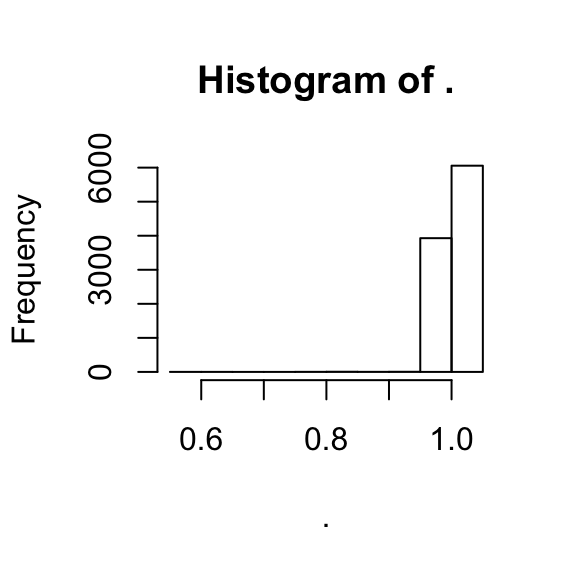

The neuralnet package is widely used and cited but not documented well at all. There are very few clear guides on using the package, especially with a fully worked example. Here, we do an analysis on the MNIST dataset.
Obviously, load our libraries.
library(neuralnet)
library(MNIST)
library(dplyr)##
## Attaching package: 'dplyr'## The following object is masked from 'package:neuralnet':
##
## compute## The following objects are masked from 'package:stats':
##
## filter, lag## The following objects are masked from 'package:base':
##
## intersect, setdiff, setequal, unionRecall the shape of the MNIST data, as a dataframe:
broom::glance(MNIST::mnist_train)## nrow ncol complete.obs na.fraction
## 1 60000 785 60000 0There are 785 variables, as 784 predictors and 1 outcome variable. However, the outcome variable is a factor, which can take on 10 values.
MNIST::mnist_train %>% dplyr::select(y) %>% table## .
## 0 1 2 3 4 5 6 7 8 9
## 5923 6742 5958 6131 5842 5421 5918 6265 5851 5949Then, in most other setups, we could setup our training process as:
nn <- neuralnet(y ~ ., data = MNIST::mnist_train, ...)There are two problems with this formulation, unfortunately.
First, this factor setup is not supported by the neuralnet package, which operates in a matrix framework. To translate this variable into a supported format, we create a class indicator. As you can see, this is basically a one-hot encoded matrix, with a 1 representing which class is denoted.
inds <- nnet::class.ind(mnist_train$y)
inds %>% head## 0 1 2 3 4 5 6 7 8 9
## [1,] 0 0 0 0 0 1 0 0 0 0
## [2,] 1 0 0 0 0 0 0 0 0 0
## [3,] 0 0 0 0 1 0 0 0 0 0
## [4,] 0 1 0 0 0 0 0 0 0 0
## [5,] 0 0 0 0 0 0 0 0 0 1
## [6,] 0 0 1 0 0 0 0 0 0 0The second problem is that we need to explicitly create a formula. The y ~ . approach is convenient and used in most other R model training situations but does not work with this package. To work around that, we need to explicitly create a formula. In the process, we change the names of inds, because the names are currently just numbers, which formulas in R do not handle. That is, numbers are protected, so we change the names to the form val0, val1, etc.
Then, we want to predict all the possible y values using all the x variables. Instead of typing out all of these variables in the formula, we do some R magic to make it simpler.
colnames(inds) <- paste("val", colnames(inds), sep = "")
f <- as.formula(paste(paste(colnames(inds), collapse = "+"), " ~ ",
paste(names(MNIST::mnist_train)[1:784], collapse = "+")))
f## val0 + val1 + val2 + val3 + val4 + val5 + val6 + val7 + val8 +
## val9 ~ V1 + V2 + V3 + V4 + V5 + V6 + V7 + V8 + V9 + V10 +
## V11 + V12 + V13 + V14 + V15 + V16 + V17 + V18 + V19 + V20 +
## V21 + V22 + V23 + V24 + V25 + V26 + V27 + V28 + V29 + V30 +
## V31 + V32 + V33 + V34 + V35 + V36 + V37 + V38 + V39 + V40 +
## V41 + V42 + V43 + V44 + V45 + V46 + V47 + V48 + V49 + V50 +
## V51 + V52 + V53 + V54 + V55 + V56 + V57 + V58 + V59 + V60 +
## V61 + V62 + V63 + V64 + V65 + V66 + V67 + V68 + V69 + V70 +
## V71 + V72 + V73 + V74 + V75 + V76 + V77 + V78 + V79 + V80 +
## V81 + V82 + V83 + V84 + V85 + V86 + V87 + V88 + V89 + V90 +
## V91 + V92 + V93 + V94 + V95 + V96 + V97 + V98 + V99 + V100 +
## V101 + V102 + V103 + V104 + V105 + V106 + V107 + V108 + V109 +
## V110 + V111 + V112 + V113 + V114 + V115 + V116 + V117 + V118 +
## V119 + V120 + V121 + V122 + V123 + V124 + V125 + V126 + V127 +
## V128 + V129 + V130 + V131 + V132 + V133 + V134 + V135 + V136 +
## V137 + V138 + V139 + V140 + V141 + V142 + V143 + V144 + V145 +
## V146 + V147 + V148 + V149 + V150 + V151 + V152 + V153 + V154 +
## V155 + V156 + V157 + V158 + V159 + V160 + V161 + V162 + V163 +
## V164 + V165 + V166 + V167 + V168 + V169 + V170 + V171 + V172 +
## V173 + V174 + V175 + V176 + V177 + V178 + V179 + V180 + V181 +
## V182 + V183 + V184 + V185 + V186 + V187 + V188 + V189 + V190 +
## V191 + V192 + V193 + V194 + V195 + V196 + V197 + V198 + V199 +
## V200 + V201 + V202 + V203 + V204 + V205 + V206 + V207 + V208 +
## V209 + V210 + V211 + V212 + V213 + V214 + V215 + V216 + V217 +
## V218 + V219 + V220 + V221 + V222 + V223 + V224 + V225 + V226 +
## V227 + V228 + V229 + V230 + V231 + V232 + V233 + V234 + V235 +
## V236 + V237 + V238 + V239 + V240 + V241 + V242 + V243 + V244 +
## V245 + V246 + V247 + V248 + V249 + V250 + V251 + V252 + V253 +
## V254 + V255 + V256 + V257 + V258 + V259 + V260 + V261 + V262 +
## V263 + V264 + V265 + V266 + V267 + V268 + V269 + V270 + V271 +
## V272 + V273 + V274 + V275 + V276 + V277 + V278 + V279 + V280 +
## V281 + V282 + V283 + V284 + V285 + V286 + V287 + V288 + V289 +
## V290 + V291 + V292 + V293 + V294 + V295 + V296 + V297 + V298 +
## V299 + V300 + V301 + V302 + V303 + V304 + V305 + V306 + V307 +
## V308 + V309 + V310 + V311 + V312 + V313 + V314 + V315 + V316 +
## V317 + V318 + V319 + V320 + V321 + V322 + V323 + V324 + V325 +
## V326 + V327 + V328 + V329 + V330 + V331 + V332 + V333 + V334 +
## V335 + V336 + V337 + V338 + V339 + V340 + V341 + V342 + V343 +
## V344 + V345 + V346 + V347 + V348 + V349 + V350 + V351 + V352 +
## V353 + V354 + V355 + V356 + V357 + V358 + V359 + V360 + V361 +
## V362 + V363 + V364 + V365 + V366 + V367 + V368 + V369 + V370 +
## V371 + V372 + V373 + V374 + V375 + V376 + V377 + V378 + V379 +
## V380 + V381 + V382 + V383 + V384 + V385 + V386 + V387 + V388 +
## V389 + V390 + V391 + V392 + V393 + V394 + V395 + V396 + V397 +
## V398 + V399 + V400 + V401 + V402 + V403 + V404 + V405 + V406 +
## V407 + V408 + V409 + V410 + V411 + V412 + V413 + V414 + V415 +
## V416 + V417 + V418 + V419 + V420 + V421 + V422 + V423 + V424 +
## V425 + V426 + V427 + V428 + V429 + V430 + V431 + V432 + V433 +
## V434 + V435 + V436 + V437 + V438 + V439 + V440 + V441 + V442 +
## V443 + V444 + V445 + V446 + V447 + V448 + V449 + V450 + V451 +
## V452 + V453 + V454 + V455 + V456 + V457 + V458 + V459 + V460 +
## V461 + V462 + V463 + V464 + V465 + V466 + V467 + V468 + V469 +
## V470 + V471 + V472 + V473 + V474 + V475 + V476 + V477 + V478 +
## V479 + V480 + V481 + V482 + V483 + V484 + V485 + V486 + V487 +
## V488 + V489 + V490 + V491 + V492 + V493 + V494 + V495 + V496 +
## V497 + V498 + V499 + V500 + V501 + V502 + V503 + V504 + V505 +
## V506 + V507 + V508 + V509 + V510 + V511 + V512 + V513 + V514 +
## V515 + V516 + V517 + V518 + V519 + V520 + V521 + V522 + V523 +
## V524 + V525 + V526 + V527 + V528 + V529 + V530 + V531 + V532 +
## V533 + V534 + V535 + V536 + V537 + V538 + V539 + V540 + V541 +
## V542 + V543 + V544 + V545 + V546 + V547 + V548 + V549 + V550 +
## V551 + V552 + V553 + V554 + V555 + V556 + V557 + V558 + V559 +
## V560 + V561 + V562 + V563 + V564 + V565 + V566 + V567 + V568 +
## V569 + V570 + V571 + V572 + V573 + V574 + V575 + V576 + V577 +
## V578 + V579 + V580 + V581 + V582 + V583 + V584 + V585 + V586 +
## V587 + V588 + V589 + V590 + V591 + V592 + V593 + V594 + V595 +
## V596 + V597 + V598 + V599 + V600 + V601 + V602 + V603 + V604 +
## V605 + V606 + V607 + V608 + V609 + V610 + V611 + V612 + V613 +
## V614 + V615 + V616 + V617 + V618 + V619 + V620 + V621 + V622 +
## V623 + V624 + V625 + V626 + V627 + V628 + V629 + V630 + V631 +
## V632 + V633 + V634 + V635 + V636 + V637 + V638 + V639 + V640 +
## V641 + V642 + V643 + V644 + V645 + V646 + V647 + V648 + V649 +
## V650 + V651 + V652 + V653 + V654 + V655 + V656 + V657 + V658 +
## V659 + V660 + V661 + V662 + V663 + V664 + V665 + V666 + V667 +
## V668 + V669 + V670 + V671 + V672 + V673 + V674 + V675 + V676 +
## V677 + V678 + V679 + V680 + V681 + V682 + V683 + V684 + V685 +
## V686 + V687 + V688 + V689 + V690 + V691 + V692 + V693 + V694 +
## V695 + V696 + V697 + V698 + V699 + V700 + V701 + V702 + V703 +
## V704 + V705 + V706 + V707 + V708 + V709 + V710 + V711 + V712 +
## V713 + V714 + V715 + V716 + V717 + V718 + V719 + V720 + V721 +
## V722 + V723 + V724 + V725 + V726 + V727 + V728 + V729 + V730 +
## V731 + V732 + V733 + V734 + V735 + V736 + V737 + V738 + V739 +
## V740 + V741 + V742 + V743 + V744 + V745 + V746 + V747 + V748 +
## V749 + V750 + V751 + V752 + V753 + V754 + V755 + V756 + V757 +
## V758 + V759 + V760 + V761 + V762 + V763 + V764 + V765 + V766 +
## V767 + V768 + V769 + V770 + V771 + V772 + V773 + V774 + V775 +
## V776 + V777 + V778 + V779 + V780 + V781 + V782 + V783 + V784Finally, we can combine the training dataset with the class indicators to create a final matrix.
train <- cbind(MNIST::mnist_train[, 1:784], inds)Now, we can train our model! Here, we do the computation with only a small subset of the values, in order to save time.
Note the options which we use in the call to neuralnet here:
hidden: This is a number or vector of hidden units to include in the model. For example, you could write c(3,5) for two hidden layers, with 3 and 5 units, respectively.linear.output: This basically tells neuralnet if you want to do regression or classification. In our case we set this value to FALSE because we want to classify the handwriting digits.set.seed(1)
nn <- neuralnet::neuralnet(f, data = train %>% sample_frac(0.1),
hidden = 3, linear.output = F)
plot(nn)Most models in R have a predict function which generates predictions given a model and a new dataset. The prediction function in neuralnet is not that. I don’t know what it is.
Here, we want to use the compute function instead. Note that we run compute on the testing dataset, with the y response variable excluded. I don’t think the function checks for column names, it just does matrix multiplication with whatever you give it, so you must make sure your training and testing data is properly aligned.
preds <- neuralnet::compute(nn, MNIST::mnist_test[, 1:784])I don’t really understand the rest. I believe each column represents a possible outcome, e.g. digit from 0-9, and each row represents the prediction value for each particular instance.
preds$net.result %>% dim## [1] 10000 10The rowsums are almost all 1, which fits this assumption.
apply(preds$net.result, MARGIN = 1, sum) %>% hist
This would mean that each observation is classified by whatever the largest class probability is. We can do some R magic to find which class has the highest probability for each observation; here, we show the distribution.
apply(preds$net.result, MARGIN = 1, which.max) %>% table## .
## 1 2 4 5 7 9
## 5328 2461 3 735 1472 1Which is, quite obviously, very different from the values that we actually see.
table(MNIST::mnist_test$y)##
## 0 1 2 3 4 5 6 7 8 9
## 980 1135 1032 1010 982 892 958 1028 974 1009